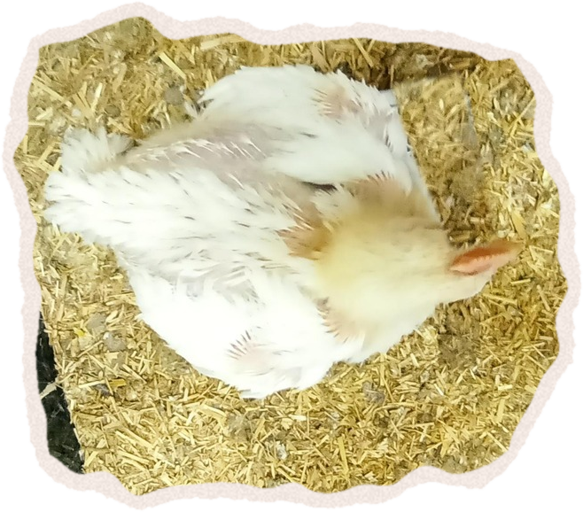
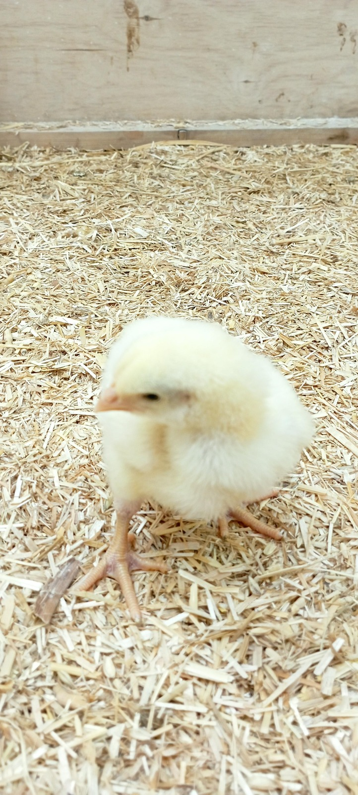
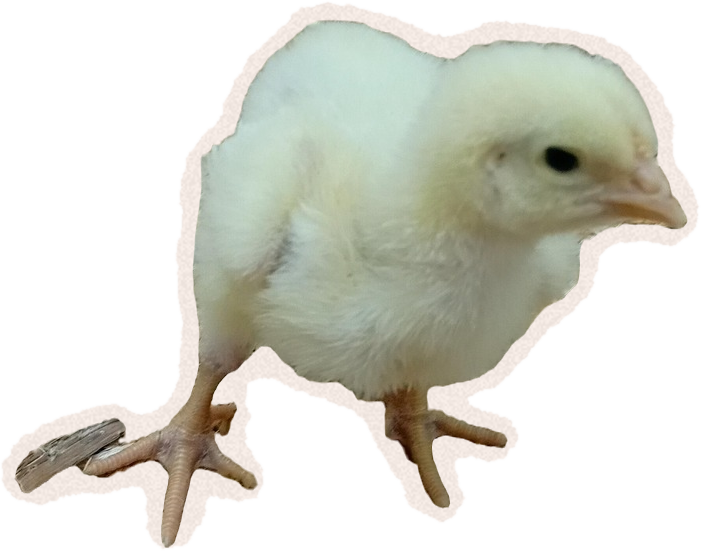
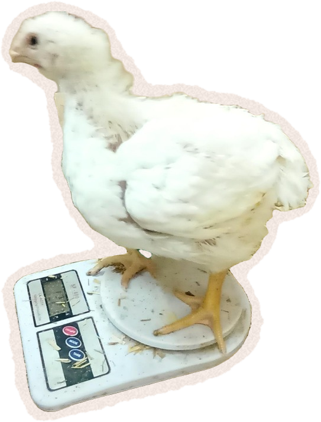

Válí se
vaše jídlo
ve výkalech?
vaše jídlo
ve výkalech?

Ilustrační záběr
Kuřata chovaná na maso · Česko
Desítky tisíc kuřat v jedné hale
30–40 dní
celý život kuřete
Pořád stejná podestýlka
Fotky z hal

Ilustrační záběr
DEN 1
Čistá podestýlka
Jen na začátku
Vyšlechtěná na rychlý růst


≈ 2 kg
Stejný počet kuřat
≈ 1 list A4 na kuře
≈ 2 kg
trusu na kuře za výkrm
skoro tolik, kolik samo váží
skoro tolik, kolik samo váží
Podestýlka · řez
Den 1: čisté hobliny
Celý výkrm se nemění
Nová vrstva navrch
Stará zůstává pod ní
Vyklízí se až po
odvozu na jatka
odvozu na jatka
Výkrm · zhruba 5 týdnů
Jatka
Výměna podestýlky
Poslední týdny výkrmu
Ilustrační záběr
Většinu dne leží
…na všem, co se nahromadilo
Přirozeně
Koupel v suchém prachu
tak si kuřata čistí peří
V hale
Vlastní výkaly
Na konci: hnojivo
zákon to řadí jako „drůbeží trus s podestýlkou“
Důsledky

Čpavek: oči, dýchací cesty
Hruď
Hlezna
Chodidla
Bolestivé popáleniny
DEN 1
Ta fotka s kuřátky
na čisté podestýlce
nelže.
na čisté podestýlce
nelže.
Jen je z
prvních dnů.
prvních dnů.
Čistší hala?
Kuře není jídlo.
Je to někdo.
Na jatkách skončí tak jako tak
Kuřat poražených ročně · Česko
110 000 000
Nabídka a poptávka
Poptávka
Nabídka
Kupujeme
Rostlinné alternativy
Kolektiv pro zvířata
www.kolektivprozvirata.cz
Zdroje v popisku